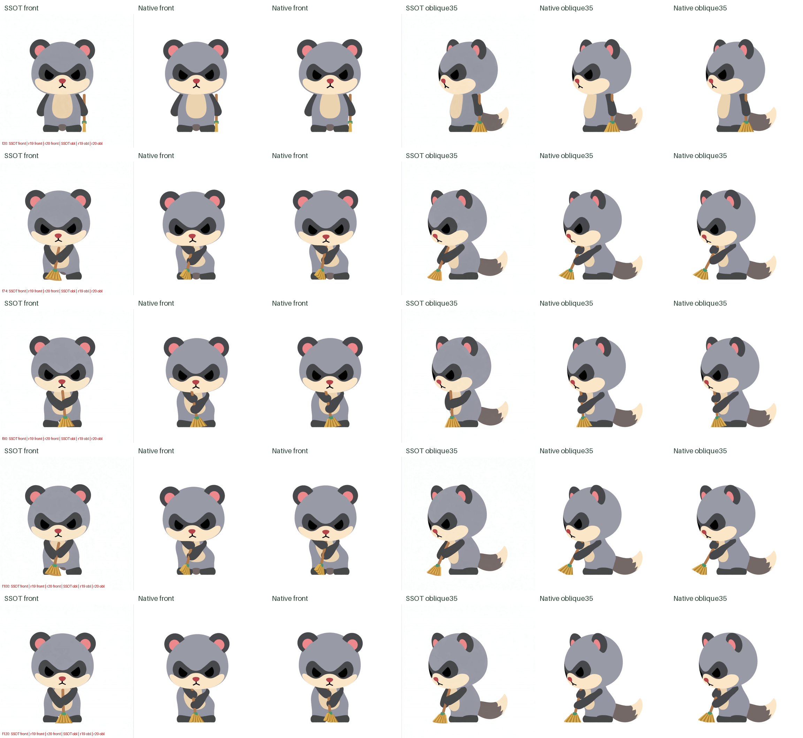
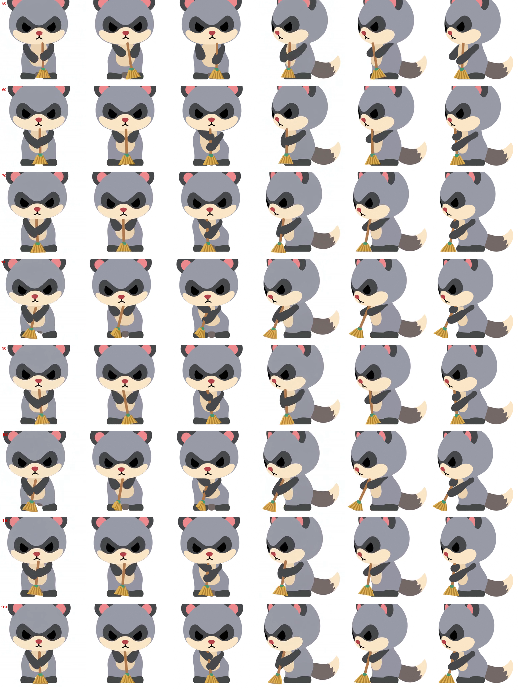

選んでいただいた 2 視点の元動画（左半分が正面、右半分が斜め 35°）に 3D リグを合わせました。ご指摘の「コップの傾きが逆」「箒を腕で挟んで見える」を、フィットの仕組みから直しています。
骨リグで作り直した版（standing-patterns のページ）は腕が型から外れて変形しており失敗でした。原因：ご指摘は「胴体が崩れる」の 1 点だけで、その原因はソルバーが元動画に合わせるために胴体を 19° 近く傾け・ひねったこと（チビの胴体はほとんど曲がらない、という部位の意味を制約にしていなかった）でした。私はそこだけ直すべきところを土台ごと作り替え、良かった腕まで壊しました。やり直し：良いと言っていただいた r19（腕を重ねる形）をそのまま土台にし、胴体の前傾 10°・横傾き 5°・頭の横傾き 8° までの範囲に収めただけです（リグ・腕は変更なし）。飲むは r9 のままです。
同じフレームでの比較（左から：元動画 正面｜r19 正面｜r20 正面｜元動画 斜め｜r19 斜め｜r20 斜め）。r19 で右へ傾いて左下が張り出していた胴体が、r20 ではほぼまっすぐになっています。

| 残っている点 | f74 付近で左下の脇腹にわずかな張り出しが残る。胴体を大きく傾けない分、元動画より頭・体の左右の揺れは控えめ。 |
|---|
コップの傾きは、元動画のコップの輪郭の向き（どちらに倒れているか）をそのまま測るように変えました。以前は外接四角形の縦横が入れ替わって向きが逆になっていました。口元では必ず飲み口が口の方を向くことを検査しています。左手は「両手でコップを持っている間」だけ解き、寄せる動きと離す動きは元動画のタイミングでなめらかに作っています（以前は離す瞬間に手が内側へ引っかかる動きがありました）。
| コップの向き | 口元にある 41 フレームすべてで飲み口が口の方を向く（逆向き 0）。斜め視点の傾きの差 中央値 0.6° |
|---|---|
| 形の重なり（元動画と 3D） | 正面 0.97 / 斜め 0.97（全フレーム 0.93 以上） |
| 小刻みな揺れ | 部位ごとの検査で 0 フレーム |
| 別担当のレビュー（GPT-6） | 合格（前回の指摘 4 点すべて解消） |
| 残っている点 | 戻すときにコップが元動画より約 9° 多く回る。手を離すのが 1〜2 フレーム早い。顔は固定（元動画は目を閉じる） |
ご指摘の「腕と腕で箒を挟むように見える」を、両腕が柄の前で重なるように作り直しました。左右の前腕が柄に巻きつき、左腕が右腕の上に重なる形です。作り直しの途中で、フィットの仕組みに次の二つの根本的な欠陥が見つかり、どちらも直しています。
列は左から「元動画 正面｜round 5 正面｜今回 正面｜元動画 斜め｜round 5 斜め｜今回 斜め」です。round 5 は両手が柄の左右に付いて挟む形、今回は前腕が柄の前で重なります。

| 腕の重なり | 両前腕が柄の前で重なる（別担当のレビューで合格、round 5 より元動画に近い） |
|---|---|
| 取りに行く前・戻した後 | 右腕は体の横に下がったまま（以前の肘の曲げ戻しは解消） |
| 小刻みな揺れ | 部位ごとの検査で 0 フレーム。取りに行く瞬間の箒の跳びもなし |
| 残っている点 | 正面で胴体の傾きが元動画より強く、体の輪郭が左右非対称に見える（ストローク中）。手の位置が元動画より少し低い（胸でなくお腹の前）。右肘がやや膨らんで見える。箒の穂の幅と先端の位置に差。顔は固定 |